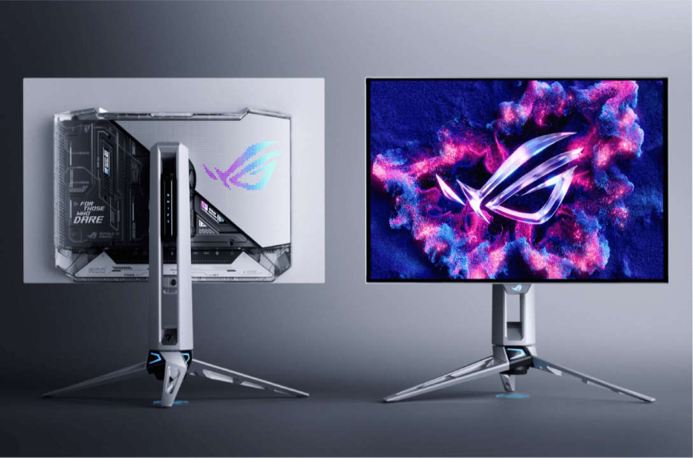

Monitör Nedir? Ne işe yarar?
Monitör Nedir?
Monitör (Ekran), bilgisayarın kasa içindeki bileşenlerinden (özellikle ekran kartından) gelen dijital sinyalleri işleyerek kullanıcının görebileceği metin, resim, video ve grafik arayüzlerine dönüştüren birincil harici çıkış birimidir.

İç yapısı

1. Ekran ve Ön Katmanlar (Görüntü Paneli)
Ön Çerçeve
Monitörün ön yüzünü çevreleyen ve iç bileşenleri dış etkenlerden koruyarak şık bir görünüm sağlayan dış çerçevedirKapsülleme Katmanı
Hassas ekran katmanlarını dışarıdaki nem, toz ve oksijenden koruyan koruyucu tabakadırMikro Mercek Dizisi (Micro Lens Array / MLA)
OLED panelin parlaklığını ve ışık verimliliğini artırmak için ışığı odaklayan minik merceklerden oluşan katmandırCam Alttaban
Ekran katmanlarının üzerine kurulduğu sağlam cam zeminPolarizer Film
şığın polarizasyonunu düzenleyerek ekran yansımalarını azaltan, renk doğruluğunu ve kontrastı artıran film tabakasıdırOLED Ekran Modülü
Her bir pikselin kendi ışığını ürettiği, kusursuz siyahlar ve yüksek kontrast sunan ana görüntü panelidir
2. Soğutma ve İç Yapı
sı Dağıtıcı Heatsink ve Vapor Chamber (Buhar Odası)
Güçlü bileşenlerin ve OLED panelin ürettiği ısıyı hızlıca uzaklaştıran, sıvı buharlaşma/yoğunlaşma prensibiyle çalışan gelişmiş soğutma sistemidirAna İç Şasi
Tüm elektronik kartların, ekranın ve bileşenlerin güvenli bir şekilde monte edildiği ana iskelettir
3. Elektronik ve İşlemci Birimleri
Ana Mantık Kartı (Mainboard)
Monitörün beynidir; gelen görüntü verilerini işler ve yönetirGörüntü İşlemcisi
Ekran kalitesini, renk optimizasyonlarını ve akıcılığı sağlayan işlemcidirT-Con (Zamanlama Denetleyicisi) Bellek
Görüntü sinyallerini panelin anlayacağı satır ve sütun verilerine dönüştüren kontrol birimidirAura Sync Kontrol Devresi
ASUS'un RGB aydınlatma teknolojisini ve diğer uyumlu cihazlarla senkronizasyonu yöneten devredirGüç Dağıtım Kartı
Şebekeden gelen elektriği monitörün farklı bileşenlerinin ihtiyaç duyduğu voltaj seviyelerine dönüştüren karttırGüç Giriş Devresi
Elektrik kablosundan gelen gücün güvenli bir şekilde monitöre girmesini sağlayan devredir
4. Bağlantı Noktaları (G/Ç Portları)
HDMI 2.1, DisplayPort 1.4, USB-C vb
Bilgisayar, oyun konsolu ve diğer harici cihazları yüksek çözünürlük ve tazeleme hızlarıyla monitöre bağlamaya yarayan bağlantı portlarıdır
5. Arka Kapak ve Aydınlatma (Estetik Tasarım)
Arka Kapak Muhafazası
İç elektronikleri kapatan, ROG tasarım çizgilerini taşıyan sağlam arka gövdedirAura Logo Yansıtma Lensleri
Logoyu veya belirli ışık efektlerini yüzeylere yansıtmak için kullanılan lenslerdirAura RGB Arka Işık
Monitörün arkasında yer alan ve oyuncu atmosferi (RGB) yaratan aydınlatma LED'leridirLED Aydınlatma Modülleri
Cihazın farklı noktalarındaki özel aydınlatma elemanlarıdır